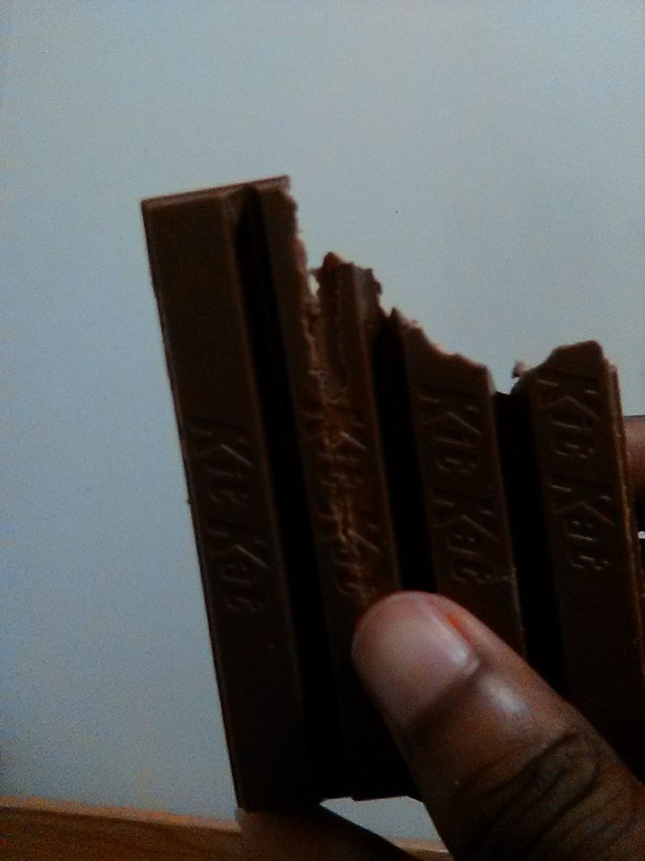
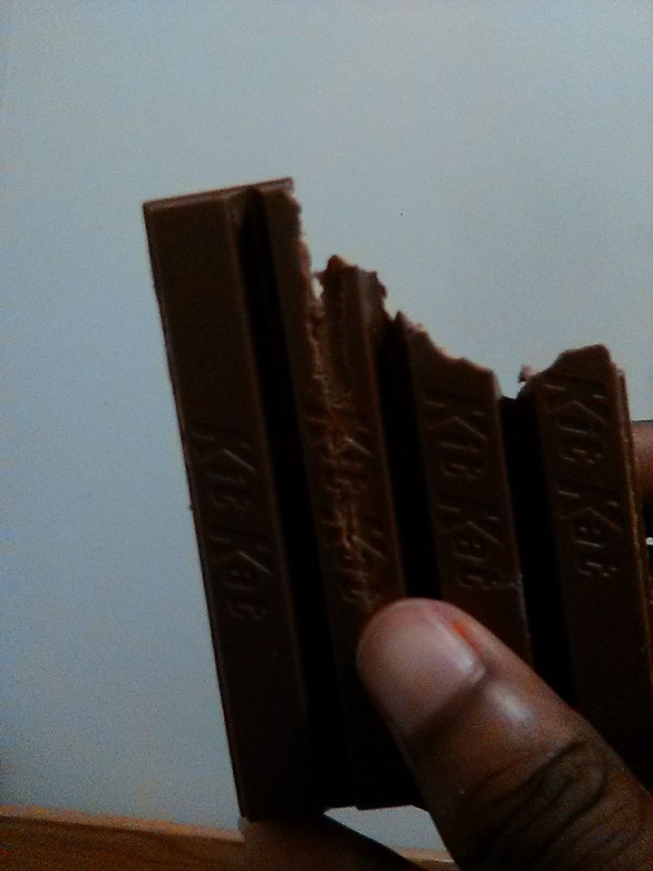

There are 5 hidden square blocks on this website.
If you find them all I will reveal a secret.


I believe this is the first ever fighting game that I have ever had the pleasure of being way too good at. This is what sparked it all when it comes to being competitive.
-1510952294.png)
Flying Dragon was pretty much the same as any other fighting game out there: Health bars, Combos, Button mashing..... Spamming.

This game was cool in the sense that you can play as either the child version or the adult version of the same characters. The adult versions were too complicated for me at the age that I played, so I usually stayed with the child characters.

This was one of the first shooters I really got into. I never got to play online (if there was any), but I had the A.I. of enemies down to a tee.

I remember I was able to play as either the robot cyborg people, or humans. I was more of a fan of the humans.

Not quite sure what allured me to this game, but I seemed to enjoy the arena based combat (with guns).

They really don't make games like this anymore (probably for a good reason). This game was so much fun, even when I was playing it by myself. It was another arena fighting game with nonsensical characters.

Eugene was my homie. This Canadian penguin spread his anxiety ridden bipolarism to my friends whenever I played him. It was great.

For some reason, the game had really weird pseudo-ads built inside that didn't really do much but be entertaining and allow for loading.
Grind up a pig. Put it in a can. Scrapple!

This game was cute in a very stereotypical kind of way. It's like if the movies Kung Pow and Deadpool decided to make a game together.

Toss the old lady!
...is how one of my friends who I played this game with would describe a level where you basically play dodgeball with a princess.

Xui Tan Sour is based off a character in this game and is what I named one of the cats I used to own. We called her Sweetan for short. My other cat was named Catzilla....no relation to this game.

This was my first ever Pokemon game. I don't really play Pokemon games much anymore. But I definitely beat this a couple times when I did.

Haunter was one of my favorite pokemon at the time. This led to me really liking ghost, psychic, and ghost pokemon.

I always chose fire types as my starter pokemon. Nowadays, I would go with grass.
What changed...

One of the first Mortal Kombat games I've ever played. I really liked it because I could walk on a three dimensional plane instead of a two dimensional one. My mains were Ermac and Noob.

I think this was my introduction into chess. Weird... I later went to become the captain of the chess team in high school.

The story mode in this game is something I wish they would return to in the newer Mortal Kombat games. Running around and punching things was a blast.

I remember Lumbridge like people remember the Titans. I'm happy that my first MMO was Runescape. It was a great past time, and even better means of procastination.

I made multiple accounts, but somehow always ended up becoming a wizzard. My first account's username was ZoixWizzard. Don't ask...

Runescape is where I got my first unofficial girlfriend. It only lasted a week because they eventually found out I was broke ...and I'm almost certain she was actually a dude.

First game that ever made care about my rank. This game was really fun to me and super under-represented by Jagex. It was 40% skill and 60% spray and pray. For me, it was 100% luck and my mother has never seen someone pray so much. She was very proud.

With rank came a cool hat that showcased your rank to everyone in game. I was almost top rank when my laptop broke and I was PC game-less for years. I never returned.

The leech was my favorite element to play with. The only problem with that was that people tended to hard focus leeches because of their huge late game potential. I was down for the challenge.

The Smash bros series has become my most favorite game series ever. I have so many memories since the ending of Melee to the beginning of Ultimate. I've made many friends and have spent (way too) many hours playing this game.

Subspace Emissary was so surreal to me. So many different characters from so many different games interacting with each other. Sakurai, the lead developer, is a madman and has since been my hero and inspiration.

The competitive Smash scene is what introduced me to the Fighting Game Community. I have participated in (and even won a few) tournaments and have watched many hours of competitve play. This is my home.

I really enjoyed this game because of how simple it was to pick up and be decent at. Knightmare, The Apprentice, and Taki were my mains.

I remember a lot of the female characters in this game were super annoying for me in particular to fight against. They had such a loose and fast playstyle and it gave me trouble online. I named one of the parakeets I use to own Sophitia which was based off a character in this game.

Like playing dress up with dolls, character customization is so much fun for gamers. I would sink hours into the creation screen trying to make the most weirdly accurate representation of outside entities or just to design an original character. Sometimes I would draw my creations as art practice.
Toeray McClain Jr.
Level 23
Computer Game Design Major
For many, our memories are the biggest and most important collection we possess. My memories revolving around video games are the most precious things to me. Every game that made my heart smile and satisfied my competitive hunger has molded me into who I am today.
This particular collection, as you can see, is comprised mostly of competitive and multiplayer games. That is why the gaming community feels so home to me. Almost every game I played growing up was designed to be shared with someone else. Being a man of action over speech, I've always let my skills with a controller do the talking for me. With that skill I've talked myself into many friendships and into where I am today: college.
Now, I am seeking a degree in Computer Game Design at George Mason University. Sometimes I feel like I'll never stop being a gamer. The day I put down the controller is the day I've finished my collection. However, That day will only come if I have lost my memory and thus, who I am. Just know I will gladly collect those memories again if needed.
I think, therefore, I gAMe